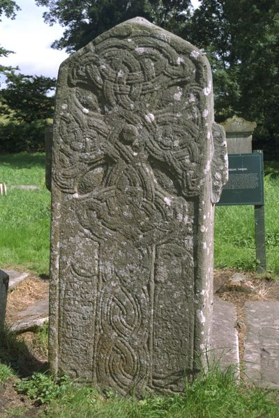
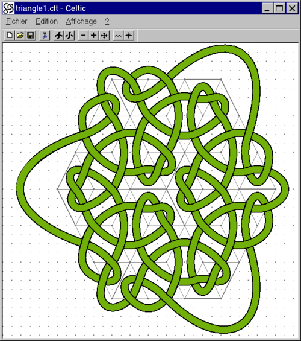
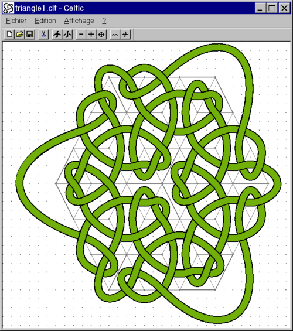

Você pode estar interessado em entrelaçados celtas porque viu uma página iluminada de uma Bíblia medieval como o Libro de Kells, que pode ser encontrado no Trinity College em Dublin.

Você pode tentar e fazer coisas semelhantes, como esta página, eu acendi para um artigo que escrevi em Pour la Science, a versão francesa de Scientific American. Caligrafia de Chantale Fachinetti.
{kind=link}
 Ou você gostaria de se tatuar, mas, infelizmente, na rua não há um tatuador tão talentoso como Pat Fish que faz coisas muito agradáveis, como a imagem à direita.
Ou você gostaria de se tatuar, mas, infelizmente, na rua não há um tatuador tão talentoso como Pat Fish que faz coisas muito agradáveis, como a imagem à direita.
 Na Irlanda, você pode tropeçar contra pedras que comprovem que esses padrões não são apenas as últimas coisas modernas.
{kind=link}
Mas nó e entrelaçados já existem há bastante tempo.
 E se os europeus chamam de celtas, as pessoas da Índia as conhecem por mais tempo (ver ISKFA06) e o mundo islâmico possui técnicas muito mais elaboradas do que os celtas. Visite sitio de Craig Kaplan para um maravilhoso programa java em mosaico islâmico e entrelaçamento.
E se os europeus chamam de celtas, as pessoas da Índia as conhecem por mais tempo (ver ISKFA06) e o mundo islâmico possui técnicas muito mais elaboradas do que os celtas. Visite sitio de Craig Kaplan para um maravilhoso programa java em mosaico islâmico e entrelaçamento.
Âmbito
Neste tutorial, você aprenderá, em menos de uma hora, como desenhar esses projetos. A técnica está resumida na seguinte imagem.

Um grafo (em vermelho) codifica um nó, para construí-lo, você coloca pequenos cruzamentos no meio de cada arista. Então, um simples procedimento de labirinto permite que você junte esses pequenos pedaços de linhas em linhas contínuas que você pode suavizar. Depois disso, você desenha o padrão de sobre / abaixo, usando um guia fácil. Finalmente você infla seu nó, como uma estrada em que os tópicos anteriores são a linha amarela no meio da estrada. E você terminou, é assim tão fácil! Por favor, note que não estou preocupado aqui com outros projetos celtas. Você pode encontrar excelentes livros sobre estes, por exemplo, o escrito pelo grande artista Aidan Meehan.
Cari Buziak trata esse tipo de coisas também, além de dominar entrelaçados.
 
Na verdade, é tão fácil que um computador pode fazer isso, existem várias implementações dos meus métodos. Os melhores são KnotPlot, KnotScape, Steven Abbott (windows only) e o magnífico KnotsBag,

Na verdade, é tão fácil que um computador pode fazer isso, existem várias implementações dos meus métodos. Os melhores são KnotPlot, KnotScape, Steven Abbott (windows only) e o magnífico KnotsBag,

Este tutorial decorre de duas séries de cursos em técnicas de iluminação que eu dei na escola de caligrafia do Instituto Alcuin em St Cyr sur Loire em 1994 e 1996. Agradeço a Richard Forestier, Chantale Facchinetti e Agnès-Frédérique Forestier por terem a graça ea paciência de me receber. Sem o seu cuidado e interesse pelo assunto e sua paixão pelas coisas bem feitas, nunca teria preparado esse tutorial e foi graças a eles que trabalhei maneiras de descrever inteligivelmente os objetos matemáticos (muito simples para um matemático) que formam o Base da teoria. Agradeço-lhes aqui.
O curso realmente começa a partir do básico.